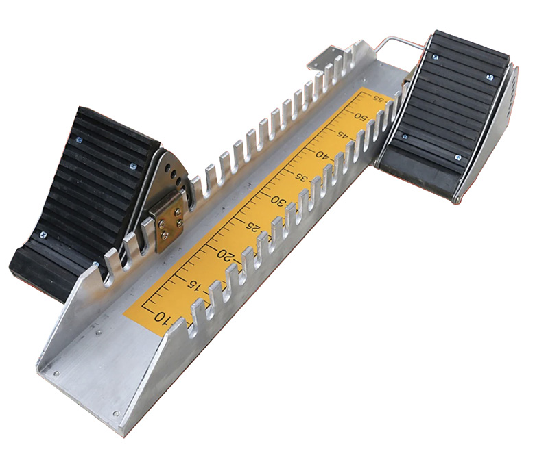
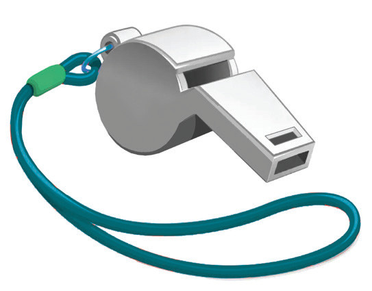
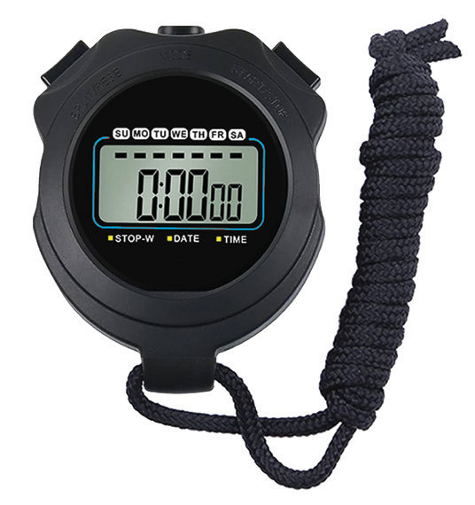
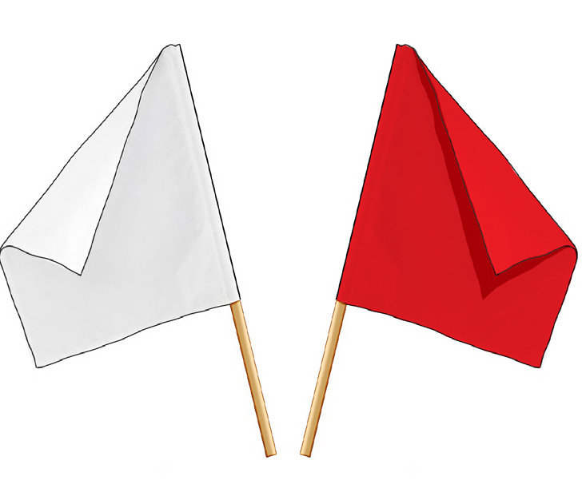
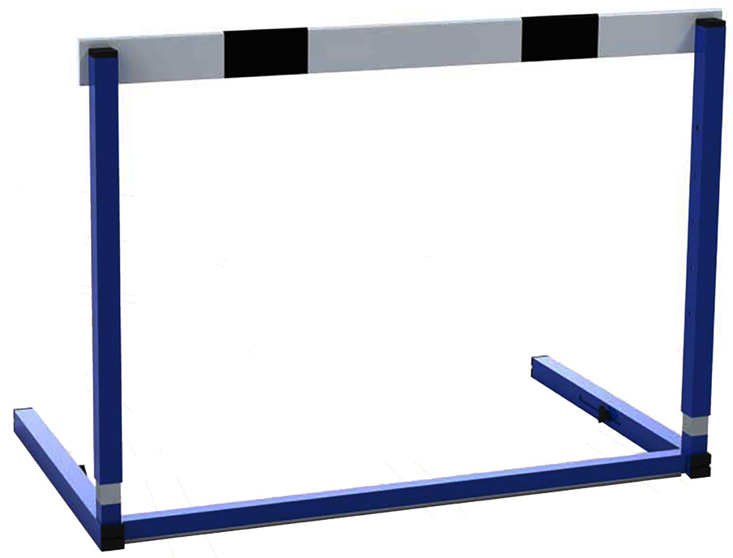

In performing hurdles, some equipment such as hurdles, pistol or whistle or clapper, stopwatches, blocks and flags are required.





Figure 5.13: Hurdles equipment
The 100 m hurdles
The 100 m hurdles is a specialised running event for women. This event requires a runner to run with speed a distance of 100 m on a track while clearing the obstacles (hurdles) arranged on the lane. An athlete requires to clear 10 hurdles with the height of 84 cm arranged on a distance of 13 m from the starting to first hurdle and the interval of 8.5 m from one hurdle to another and 10.5 m from the last hurdle to the finish line.
Starting 100 m hurdles
The runner begins the race from the crouch start position as in 100 m sprints. In this stage, a runner has to cover a distance of 13 m for the first hurdle clearance and fairly develop high speed. The runner should place the trailing foot on the front block to clear the hurdle easily.